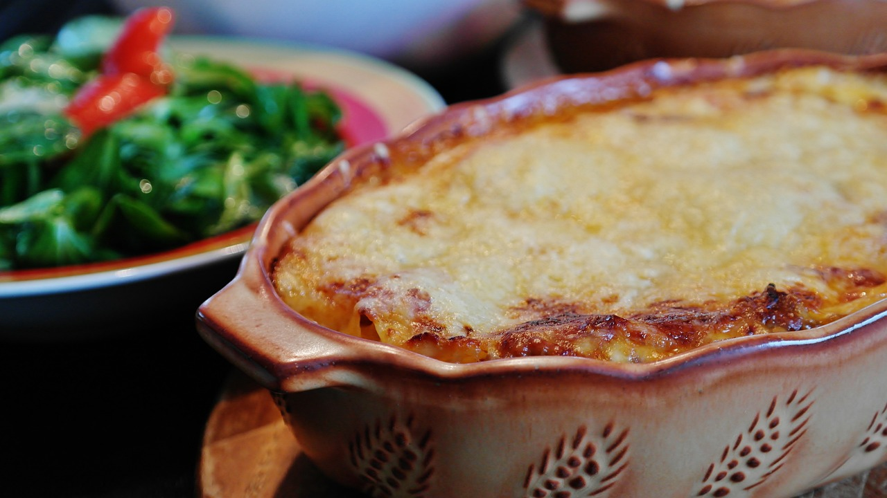

Lasaña de carne
A la forma tradicional

Ingredientes:
| Ingredientes | Cantidad |
|---|
| Carne de cerdo | 250g |
| Carne de ternera | 250g |
| Zanahorias | 2 unidades |
| Tomate | 250 g |
| Vino blanco | 250 mL |
| Aceite de oliva | 100 mL |
| Cebollas | 2 unidades |
| Orégano | 1 cucharada |
| Sal | 1 g |
| láminas de lasaña | 12 láminas |
| Harina de trigo | 125 g |
| Mantequilla | 125 g |
| Leche entera | 1 L |
| Nuez moscada | 4 g |
| queso rallado | 100 g |
Pasos:
- Calentar una cazuela grande, y echar la sal cuando empiece a hervir
- Introducir en ella las láminas de lasaña una a una, sin que se peguen
- Removerlas 10 minutos y luego dejarlas en papel absorbente de cocina
- Cortar las verduras en trocitos y echarlas en un bol
- Echar en una cazuela aceite de oliva y echar las verduras
- Sofreír las verduras durante 15 minutos
- Echar la carne
- Echar un vaso de vino blanco y esperar a que reduzca
- Echar el tomate y el orégano
- Precalentar el horno a 200ºC durante 15 minutos
- Preparar la bechamel
- Poner en la fuente tres cucharadas de bechamel
- Poner a continuación una lámina
- Poner la mezcla de carne encima de la lámina
- Repetir este proceso de montado 3 veces
- Hornear a 180ºC durante 15 minutos
Inicio Croquetas Tortilla
 Esta obra está bajo una Licencia Creative Commons Atribución-NoComercial 4.0 Internacional.
Esta obra está bajo una Licencia Creative Commons Atribución-NoComercial 4.0 Internacional.